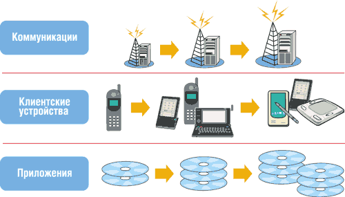

Андрей Борзенко
Сегодняшняя стратегия Intel (http://www.intel.com) нацелена на то, чтобы предоставлять все более разнообразные приложения и услуги для стационарных и беспроводных сетей следующего поколения. Дело в том, что корпорация создала две аппаратные коммуникационные архитектуры, предназначенные для ускорения разработки нового оборудования для связи и беспроводных клиентских устройств, появление которых стало возможно благодаря слиянию сетей для передачи голоса и сетей передачи данных. Так, архитектура Internet Exchange Architecture (IXA) позволяет сформировать инфраструктуру, необходимую сетям следующего поколения, а архитектура Personal Internet Client Architecture (PCA) ускоряет переход на использование беспроводных клиентских устройств следующего поколения. Потребность в наращивании пропускной способности Интернет-каналов определяется стремительным развитием рынка беспроводных устройств, продолжающимся увеличением числа абонентов проводного доступа к Сети и образованием сетей следующего поколения для передачи голоса и данных. Такой ажиотаж вокруг передачи оцифрованной информации через Интернет создает на рынке благоприятную конъюнктуру для полупроводниковых коммуникационных компонентов Intel. По мнению ведущих менеджеров корпорации, архитектуры IXA и PCA - это краеугольные камни современной стратегии, востребованные и поддерживаемые рынком.
Эволюция беспроводного доступа в Интернет
Организацию среды беспроводного доступа в Интернет иллюстрирует рис. 1. Поскольку пользователям мобильных устройств требуется расширение функциональности работы с данными, получение доступа к новым услугам и приложениям при помощи беспроводных сетевых клиентов, сегодняшняя роль подобных устройств претерпевает значительные изменения. По данным ARC Group, число подписчиков абонентских услуг беспроводной связи достигнет 1,4 млрд к 2004 г., а число абонентов сотовой связи с доступом в Интернет вырастет к тому же году до 560 млн человек. Эксперты IDC говорят об увеличении числа мобильных устройств доступа в Интернет и аппаратов типа Smart Phone с 40 млн в 2001 г. до 516 млн к 2005 г. Возможности глобальной сети Интернет в сфере образования, коммуникаций и развлечений изменили сами стереотипы работы, общения и жизни людей, использующих мобильные средства связи.
| Рис. 1. Среда беспроводного доступа в Интернет.
|
Технология объединения данных в пакеты и появление общепризнанных стандартов широкополосной передачи также стимулируют разработку нового поколения мобильных устройств с поддержкой Интернета, таких как персональные цифровые помощники (PDA), интеллектуальные телефоны, Web-планшеты, электронные книги и Интернет-приставки. Предприятиям и обычным потребителям требуется широкий выбор новых и усовершенствованных переносных продуктов, обеспечивающих беспроводной доступ к сетям на глобальной основе для компьютерной поддержки их деятельности, коммуникаций и развлечений.
В настоящее время проводные сети доступа в Интернет обслуживают в основном работу с данными. В этом же направлении идет развитие быстро растущего сектора беспроводных коммуникаций, поэтому новые беспроводные устройства должны нести в себе средства обработки данных.
Сегодня разработка и внедрение беспроводных устройств идут последовательно и зачастую медленно. Сначала разрабатывается аппаратное обеспечение, затем для данного типа приемопередающего интерфейса создаются прикладные программы, после чего оборудование и ПО тестируются для утверждения типового образца и получения разрешений. При этом все приложения должны разрабатываться и тестироваться на корректность работы с каждым протоколом передачи и каждым сетевым интерфейсом. Если такой последовательный процесс проектирования сохранится и впредь, разработка приложений не будет поспевать за развитием и ростом Интернета. Чтобы ускорить эти процессы, разработки аппаратного и программного обеспечения должны быть взаимно "развязаны" и проводиться параллельно с написанием приложений для универсального процессора, работающего в среде общего назначения.
В случае параллельной разработки (рис. 2) мобильные приложения создаются независимо от пакета коммуникационных программ, что минимизирует воздействие новых приложений для данной платформы на процесс утверждения образца изделия. Параллельная разработка позволит аппаратным и программным средствам развиваться быстрее и независимо друг от друга, в своем собственном темпе. Новая среда будет также способствовать возникновению нового сообщества разработчиков оборудования и ПО, что расширит спектр мобильных устройств и программного обеспечения.
|  |
| Рис. 2. Процесс параллельной разработки.
|
Технологии сотовой связи первого и второго поколения (аналоговая AMPS и цифровые GSM/TDMA/CDMA) ограничивали полосу пропускания и распределение спектра и были не в состоянии поддерживать более высокие скорости передачи данных, необходимые для доставки информационного наполнения Интернета, на таком уровне, который удовлетворил бы пользователей. Многие рассматривают поколение 2.5G как промежуточное решение на пути к сетям третьего поколения. Решения 2.5G включают, в частности, технологии GPRS (General Packet Radio Service) и EDGE (Enhanced Data Rates for Global Evolution), которые значительно повышают пропускную способность в сравнении с возможностями сегодняшних сотовых систем. Системы поколения 2.5G, такие как GPRS или EDGE, теоретически позволяют достигать скоростей передачи данных до 144 Кбит/с и 384 Кбит/с соответственно. Системы третьего поколения (3G), например, WCDMA, имеют теоретический предел скорости передачи в 2,048 Мбит/с. Новые сотовые стандарты изменяют саму модель использования сотовых телефонов. Следующее поколение мобильных телефонов не будет ограничиваться голосовыми возможностями; напротив, они смогут поддерживать разнообразные приложения мультимедиа, широкополосные сервисы и доступ к локальным и глобальным корпоративным сетям (LAN и WAN) благодаря возросшим возможностям обработки данных и более широкой полосе пропускания радиоканала.
Очередное поколение сотовых сетей будет поддерживать IP-протокол. Это означает, что мобильное устройство сможет обеспечивать доступ в Интернет, в корпоративные локальные и глобальные сети. Благодаря сотовым системам следующего поколения мобильные устройства можно будет использовать в качестве сетевых клиентов в клиент-серверных коммуникациях. Такие технологии, как CORBA, DCOM, Jini, 802.11 и Bluetooth, будут применять протоколы сетевого обслуживания для доставки новых приложений и предоставления услуг мобильному клиенту там, где эти сервисы окажутся востребованы. Пользователи не будут больше привязаны к своему рабочему столу, но смогут свободно перемещаться, сохраняя доступ к широкому диапазону корпоративных сервисов.
Архитектура для открытой платформы
Назначение Intel PCA - упростить разработку аппаратного обеспечения и стимулировать разработку ПО на основе нескольких принципов. Открытая архитектура обеспечивает поддержку широкого спектра ОС, сред выполнения программ и интерфейсов с приемо-передающими системами. Масштабируемость этой архитектуры на основе компоновочных блоков гарантирует максимальные возможности многократного использования приложений в различных продуктах и программах. Новая параллельная среда разработки программного и аппаратного обеспечения сокращает время готовности продуктов к выходу на рынок, поскольку независимые друг от друга разработка приложений и проработка коммуникационных функций минимизируют привязку к конкретному образцу или типу устройства. Гибкость и адаптируемость архитектуры означают способность интегрировать новые аппаратные и программные возможности по мере появления новых отраслевых стандартов и запросов рынка.
Архитектура Intel PCA включает все компоненты для создания беспроводных клиент-серверных решений. Она рассчитана на работу с различными ОС. Для нее характерен высокий уровень модульности, что позволяет тестировать каждый модуль независимо от других и использовать его со многими ОС. Модульный подход к конструированию минимизирует проблемы привязки к конкретному типу устройства; благодаря ему не требуется утверждать типовой образец всякий раз при появлении новых приложений, которые в противном случае могли бы оказать воздействие на функционирование базовой подсистемы обработки коммуникаций.
Там, где это уместно и возможно, архитектура Intel PCA опирается на промышленные стандарты. Кроме того, обеспечивается совместимость снизу вверх и сверху вниз с текущими и грядущими платформами. В частности, любое совместимое приложение, написанное для Intel PCA, и программные интерфейсы приложений (API) будут работать в будущих устройствах, построенных на основе этой архитектуры.
Вообще говоря, Intel PCA - это открытая платформа, предназначенная в первую очередь для построения приложений беспроводного доступа и клиентских устройств. Она может применяться в разработке следующих типов устройств:
- беспроводных мобильных клиентов (от голосовых телефонов до PDA);
- интеллектуальных телефонов и коммуникаторов;
- Web-планшетов;
- автомобильных компьютеров.
Подсистемы платформы
Intel PCA представляет собой платформу для быстрой разработки и развертывания устройств, ориентированных на работу с данными, а также приложений и сервисов нового поколения. Задавая параметры архитектуры аппаратной платформы на основе стандартных компоновочных элементов и открытых интерфейсов, а также предоставляя открытую структуру программирования с открытыми интерфейсами и сервисами, разработчики ПО и конструкторы могут создавать свои продукты, масштабировать их и развертывать в более короткие сроки и с меньшими затратами.
В рамках архитектуры Intel PCA конфигурация традиционного сотового устройства разбивается на три подсистемы: подсистемы приложений, коммуникаций и памяти. Такое разделение делает разработку независимой от коммуникационных стандартов, а архитектура Intel PCA предоставляет открытые программные интерфейсы и сервисы между физической платформой (включая коммуникации) и прикладными программами, обеспечивая тем самым абстрагирование от физических ресурсов.
На рис. 3 представлена структура аппаратных средств архитектуры Intel PCA с основными подсистемами. Каждая подсистема изолируется при помощи открытых интерфейсов, которые обеспечивают:
- простоту интеграции и расширения новых компоновочных блоков подсистемы;
- масштабирование путем замены и добавления основных компоновочных блоков;
- расширяемость для поддержки будущей функциональности, не заданной на момент разработки (это обеспечивается высокой степенью абстрагирования, заложенной в оригинальной разработке);
- модульный принцип для минимизации воздействия процедур тестирования типовых образцов при добавлении новых приложений;
- совместимость со всеми основными стандартами сотовых интерфейсов с приемопередатчиком (благодаря изолированности и возможности замены ПО и логики сотовых протоколов подсистемы коммуникаций на новые);
- гибкость в конструктивной реализации клиентского устройства.
| Рис. 3. Подсистемы платформы PCA.
|
Подсистема приложений
Подсистема приложений содержит микропроцессор общего назначения и представляет собой перепрограммируемую среду, способную поддерживать работу ОС, приложений и пользовательского интерфейса. Эта подсистема управляет такими ресурсами, как устройства ввода-вывода информации, устройства расширения, интерфейсы с памятью, управление питанием и взаимодействие с подсистемой коммуникаций.
Архитектура подсистемы приложений подразделяет программные модули на собственно приложения, промежуточное ПО, ОС с ее сервисами и сервисы уровня аппаратной платформы. Подсистема приложений может использовать свои сервисы с различными уровнями абстракции для достижения изменяемых степеней масштабируемости и переносимости на иные платформы. Эта подсистема состоит из нескольких программных компонентов. Сервисы платформы обеспечивают абстракции аппаратного обеспечения и интерфейсов с оборудованием, соответствующим требованиям архитектуры Intel PCA. ОС и ее сервисы служат архитектурной основой для приложений, моделей задач и базовых сервисов. Кроме того, на различных уровнях предоставляются следующие сервисы:
- мультимедийные (поддержка приложений потокового видео и аудио);
- безопасности (поддержка расширенных библиотек);
- управления платформой (управление клиентским устройством);
- коммуникационные (общие коммуникационные возможности платформы при установлении и управлении сетевыми соединениями).
Промежуточное ПО поставляет дополнительные программные компоненты, расширяющие спектр сервисов, доступных приложениям. Ну а сами приложения обеспечивают современную функциональность для потребителей.
Во всех случаях платформа Intel PCA предоставляет разнообразные возможности, которые могут масштабироваться для получения тех или иных комбинаций оборудования и ПО. Важнейшая архитектурная концепция, поддерживающая такую масштабируемость, - это выделение компоновочных блоков и сервисов. Сервисы изолируют программные модули, что позволяет разрабатывать приложения и связующее ПО независимо от аппаратной платформы и системы коммуникаций, защищая вложения в разработку устройства и сохраняя возможность расширения его функциональности. Выделение сервисов в отдельную структуру также позволяет создавать новые сервисы на основе сервисов более низкого уровня.
Сходным образом в рамках модели программирования Intel PCA могут быть интегрированы и расширены базовые компоновочные блоки подсистем коммуникации, безопасности, управления питанием, мультимедиа и сервисы управления ресурсами.
Подсистема коммуникаций
Эта подсистема предоставляет подсистеме приложений независимые от физического носителя сервисы доступа в сотовые сети. Сервисы подсистемы коммуникаций независимы от технологии обеспечения радиосвязи и вместе с подсистемой приложений отвечают за поддержание соединения с соответствующей беспроводной сетью и реализацию сервисов телефонии и обмена данными.
Подсистема коммуникаций может состоять из одного или двух процессоров - таких, как процессор цифровой обработки сигналов (DSP) или микропроцессор общего назначения, которые выполняют обработку коммуникационных протоколов различного уровня, включая поддержку радиоинтерфейса с сотовой сетью. Для обеспечения интенсивной обработки данных в реальном времени добавляются ускоряющая логика, соответствующая заданному протоколу, и процессор цифровой обработки сигнала.
Поскольку цель архитектуры Intel PCA состоит в разделении подсистем приложений и коммуникаций, подсистема коммуникаций должна скрывать возможности технологии беспроводного доступа от приложений. Таким образом, приложение освобождается от необходимости знать что-либо о сотовой сети и легко портируется.
Подсистема памяти
Подсистема памяти - основной компонент архитектуры Intel PCA. Мобильные устройства предъявляют специфические требования к памяти, отличающие их от других типов систем. В частности, повышение производительности подсистемы часто должно достигаться за счет минимизации числа компонентов и потребления энергии. Все эти цели должны быть достигнуты при минимальных затратах. Зачастую возможности приложений, сервисов и устройств определяются возможностями и емкостью различных типов памяти. Иерархия типов памяти в архитектуре Intel PCA предусматривает все основные типы элементов, включая кэш-память; память, располагающуюся на микропроцессоре; дискретные компоненты системы памяти и сменную память.
Архитектура Intel PCA является мультипроцессорной с большим разнообразием реализаций за счет применения совместимых компоновочных блоков, поэтому эти элементы иерархии памяти могут быть спроектированы и объединены множеством способов. Такие строительные элементы включают энергонезависимые и энергозависимые типы, в том числе статическую, динамическую и флэш-память.
Открытые интерфейсы
На практике интерфейс между подсистемами приложений и коммуникаций должен быть способен передавать данные и управляющую информацию в обоих направлениях, включая способность генерировать и передавать сигналы "побудки" (wake-up) в другие подсистемы. В настоящее время не существует стандарта на этот интерфейс, а используется множество частных решений, включая двухпортовую память, USB, SSP и UART. Текущие решения, требующие довольно большого числа сигналов, плохо масштабируются и неоптимальны для решения данной задачи.
Чтобы добиться создания действительно открытой архитектуры, позволяющей легко устанавливать соединения со многими различными интерфейсами, необходима определенная степень стандартизации интерфейса. Поэтому интерфейс между Intel PCA и процессором приложений определяется как оптимальный открытый интерфейс между подсистемами приложений и коммуникаций и является главным элементом архитектуры. Подобный интерфейс может использоваться для осуществления всех связей между подсистемами приложений и коммуникаций. Предполагаемые типы коммуникаций таковы: управляющие функции из подсистемы приложений, уведомления из коммуникационной подсистемы, а также передаваемые и полученные данные.
Интерфейс между процессором приложений и Intel PCA должен обеспечивать широкополосный канал, способный поддерживать одновременную передачу нескольких потоков данных сотовых сетевых приложений следующего поколения. Этот интерфейс состоит из физического интерфейса, соединяющего подсистему приложений с подсистемой коммуникаций, и средств управления каналом передачи. Для достижения самой высокой пропускной способности между компонентами беспроводных устройств архитектура Intel PCA рекомендует переходить на этот интерфейс, имеющий более широкую полосу пропускания и более надежные сервисы в сравнении с обычными последовательными портами. Этот интерфейс следующего поколения хорошо масштабируется и оптимизирован для передачи потоков данных, создаваемых приложениями.
При этом сами приложения, развязанные с физическим интерфейсом, применяемым в конкретном конструкторском решении, опираются на параметры логического уровня, что позволяет обеспечить максимальный уровень совместимости.
Логический уровень может использоваться разработчиками приложений или системными программистами для развязки ПО подсистем коммуникаций и приложений. Более того, этот уровень можно использовать для разработки ПО независимо от создания других систем конечного продукта, а также в ситуации, когда отсутствуют подсистемы коммуникаций или приложений или же обе эти подсистемы полностью интегрированы.
Интерфейс между Intel PCA и уровнем приложений - это многоуровневый интерфейс, который обеспечивает обмен данными и управляющими командами между подсистемами приложений и коммуникаций. Он обеспечивает логическое разделение этих двух подсистем как в случае, когда они физически соединены с процессором приложений, так и в иных случаях. Подобное соединение обеспечивает целостное представление подсистемы приложений с точки зрения программирования и предоставляет такую степень разделения между двумя подсистемами, которая позволяет разрабатывать их независимо друг от друга. Таким образом, предлагается масштабируемое решение, которое позволяет подсистеме приложений поддерживать целостность процесса взаимодействия с подсистемой коммуникаций в различных физических реализациях. Это решение состоит из надежного сетевого уровня, который отвечает за установление и поддержание соединения (service connection endpoints), а также одного или нескольких протоколов управления высокого уровня, которые обеспечивают коммуникации подсистем. В зависимости от физической конфигурации для обеспечения масштабируемости решения потребуются те или иные компоненты многоуровневого интерфейса. Например, для однопроцессорного решения уровень канала передачи данных (data link layer) не требуется, поскольку подсистемы приложений и коммуникаций составляют единый узел.
Реализации
Архитектура Intel PCA определяет два класса конфигураций устройств:
- Ìодульные конфигурации, когда устройство физически разбивается на подсистемы приложений и коммуникаций;
- Èнтегрированные конфигурации, в которых подсистема коммуникаций находится в пределах той же физической подсистемы, что и подсистема приложений.
В модульном исполнении память может быть разделена на независимые подсистемы для приложений и коммуникаций или же она может представлять собой единую подсистему памяти, разделяемую обеими подсистемами. В интегрированном исполнении аппаратное и программное обеспечение должны обеспечить независимость подсистемы приложений от любых протоколов или процедур реального времени. В реализациях обоих типов подсистема коммуникаций обычно содержит процессор DSP и процессор общего назначения. Традиционно DSP-процессор обрабатывает нижние уровни коммуникационного протокола, а основной микропроцессор может заниматься обработкой верхних уровней. В интегрированном исполнении микропроцессор также может поддерживать выполнение приложений, в частности, любых приложений, соответствующих требованиям к ПО и программным интерфейсам (API) архитектуры Intel PCA. Подсистема памяти частично или целиком может располагаться на кристалле процессора, включая энергозависимые и энергонезависимые элементы. Ресурсы памяти могут разделяться приложениями и задачами обработки коммуникационных процедур. На рис. 4 показаны оба типа исполнения.
| Рис. 4. Два типа исполнения.
|
Открытая среда программирования
Архитектура Intel PCA предлагается в качестве платформы для создания беспроводных клиентских Интернет-устройств. Она должна поддерживать широкий спектр устройств различных уровней сложности, способных обеспечить работу многообразных приложений.
Открытая среда программирования основывается на сервисах и расширяемой открытой структуре, обеспечивающей поддержку стандартов для этих сервисов. В этом отношении инвестиционная политика Intel в рамках инициативы PCA будет поощрять поддержку таких стандартов. Открытая программная среда также обеспечивает поддержку иных программных архитектур и сред выполнения программ, которые пожелают использовать изготовители мобильных устройств. В рамках Intel PCA определяются требования и руководящие принципы как для ОС, так и для иного ПО, работающего на данной платформе. Открытая среда программирования обеспечивает общий базис для устройств, удовлетворяющих принципам архитектуры Intel PCA в настоящее время и в будущем.
Руководящие принципы
Открытая среда программирования для архитектуры Intel PCA строится на принципах открытости, модульности, масштабируемости, соответствия стандартам и расширяемости. Открытость и расширяемость среды Intel PCA проявляется благодаря поддержке различных ОС (от компактных ОС реального времени для фиксированного набора приложений до систем общего назначения с возможностями ОС настольных компьютеров), различных сред исполнения приложений и коммуникационных стандартов. Кроме того, следует отметить поощрение разработки приложений независимыми программистами, а также поддержку встроенных и загружаемых приложений, что позволяет OEM-производителю задавать базовую функциональность устройств, а пользователям или поставщикам услуг - расширять ее.
Открытая среда программирования для архитектуры Intel PCA является модульной, что обеспечивает гибкость в реализации устройств. Компоненты открытой среды можно выбирать индивидуально для решения требуемой задачи с тем, чтобы оптимизировать использование памяти и других системных ресурсов. Целое семейство устройств может быть построено на основе общей базовой конструкции путем включения расширенной функциональности поверх базовой. Модули могут разрабатываться и тестироваться независимо.
В дополнение к масштабируемости аппаратной платформы Intel PCA открытая среда программирования также является масштабируемой. ПО в состоянии определять тип оборудования, на котором оно работает, и оптимально использовать все возможности имеющихся аппаратных ресурсов. Можно подобрать наилучшую с точки зрения предназначения устройства комбинацию приложений и компоновочных блоков, достигая баланса использования ресурсов и быстродействия.
Чтобы отвечать всем требованиям сквозного клиент-серверного решения, мобильные устройства должны быть способны ко взаимодействию со всем многообразием иных типов мобильных устройств, сетей, настольных систем и серверов. Для этого открытая среда программирования Intel PCA поддерживает все соответствующие стандарты, устанавливаемые такими организациями, как Third Generation Partnership Project (3GPP), Международный союз по телекоммуникациям (ITU), Internet Engineering Task Force (IETF) и консорциум W3C.
Требования к ПО
Для обеспечения совместимости с Intel PCA архитектура налагает некоторые требования на ОС и иное системное ПО устройств. Эти требования важны для установления целостности и единообразия, которое позволяет гарантировать совместимость всех устройств, построенных на основе архитектуры Intel PCA. Это также важный шаг в обеспечении роста и развития сообщества разработчиков.
Чтобы обеспечить открытость платформы для сообщества программистов и возможность многократного использования компоновочных блоков, все устройства платформы Intel PCA должны поддерживать архитектурное разделение между подсистемами коммуникаций и приложений; разумеется, системное ПО устройства тоже должно поддерживать такое деление. В большой степени за предоставление приложению коммуникационных возможностей отвечает ОС или среда исполнения, организованная как набор сервисов, вызываемых через программные интерфейсы приложений.
Разделение может осуществляться как на физическом (через шинный или последовательный интерфейс), так на логическом уровне, с использованием приоритетов задач и защиты памяти. Для разделения подсистем коммуникаций и приложений, выполняющихся на различных процессорах, в архитектуре Intel PCA в качестве физического интерфейса используется соответствующий шинный интерфейс. Протокол интерфейса с приложениями служит логическим разделителем, который может использоваться во многих системных конфигурациях для предоставления этой поддержки или в пределах единой ОС (поддерживающей работу как приложений, так и коммуникационных сервисов), или в рамках прикладной ОС, работающей совместно с ОС реального времени, отвечающей за коммуникационные протоколы.
Для управления системной памятью и задачами и предоставления требуемых программных интерфейсов для пользовательских приложений открытая среда разработки Intel PCA полагается на ОС или среду выполнения программ. Чтобы устройство было открытым и расширяемым, в нем должны быть предусмотрены средства сохранения новых приложений и данных пользователя. В вопросах долговременного хранения информации и программных интерфейсов для доступа к ней открытая среда Intel PCA также полагается на возможности ОС или среды выполнения программ.
Требования к безопасности
Как ожидается, в последующие несколько лет появится огромное разнообразие беспроводных устройств с доступом в Интернет. Это поставит операторов сетей, корпоративные ИТ-службы и органы государственного регулирования перед серьезными проблемами в сфере обеспечения безопасности и конфиденциальности. Сотовые телефоны следующего поколения также будут поддерживать протокол IP, обеспечивающий доступ в Интернет и корпоративные сети. Эти устройства и соответствующие сетевые инфраструктуры начнут сталкиваться с теми же проблемами безопасности, которые существуют в традиционных средах, объединяющих настольные ПК и серверы. Восприимчивость телефонов к вирусным атакам должна быть уменьшена, как это уже делается для среды настольных компьютеров. Аналогично, такие параметры приемопередатчика, как несущие частоты и мощность, должны быть защищены от несанкционированного изменения в результате взаимодействий между загруженными приложениями и базовыми коммуникационными функциями. Поставщики ОС, OEM-производители и независимые поставщики ПО должны принимать во внимание вопросы безопасности. Для этой цели Intel и другие фирмы предоставляют программные интерфейсы безопасности и периферийные устройства (например, криптоакселераторы, генераторы случайных чисел и сигнальные системы безопасности).
Мультимедиа
Уже сформировалась тенденция к включению расширенных мультимедийных возможностей в мобильные устройства, как ожидается, этот процесс будет только ускоряться. Подсистема приложений архитектуры Intel PCA обеспечивает ресурсы, необходимые для обработки данных современных приложений мультимедиа. Однако чтобы в полной мере воспользоваться этими возможностями, требуется основа для реализации потокового мультимедиа. Существует множество стандартных мультимедийных алгоритмов кодирования, такие, как GSM, G.723, H.263, MPEG-4 Video и MP3. Потоковая мультимедийная основа обеспечивает структуру для обработки и координирования мультимедийной информации и позволяет легко вводить в систему кодеки и алгоритмы, делая их доступными для разработчиков приложений. Для достижения наилучших характеристик приложения мультимедиа, выполняющиеся под управлением ОС и/или в среде исполнения, должны использовать единую потоковую структуру, подстроенную под требования платформы. Разработчики ОС и сред исполнения программ, которые хотят, чтобы их продукты удовлетворяли спецификациям Intel PCA, должны включать в них поддержку потокового мультимедиа. В рамках инициативы Intel PCA имеются и программные компоненты, такие, как Intel Integrated Performance Primitives, которые помогут снизить затраты на разработку за счет включения в продукты потокового мультимедиа и кодеков.
Управление и инициализация
Мобильные устройства должны быть все более простыми в конфигурировании, более надежными и легко поддающимися модернизации или ремонту. Управляемость подразумевает средства, при помощи которых устройство делает доступными пользователю удобные и надежные сервисы. Чем сложнее клиентское устройство и чем ответственнее стоящие перед ним задачи, тем больше возможностей управления требуется для поддержания заданного уровня надежности обслуживания. Создание беспроводных клиентских устройств с проработкой вопросов управляемости помогает снизить затраты на обслуживание, облегчить сервис, повысить готовность и увеличить время бесперебойной работы устройства - все это вносит вклад в повышение производительности труда пользователя.
Программа поддержки
Intel разработала специальную программу, которая призвана помочь разработчикам в успешном создании и продвижении на рынок приложений, услуг и устройств беспроводной связи. В частности, сеть Intel PCA Developer Network предлагает компаниям, специализирующимся на беспроводных технологиях, техническую и маркетинговую поддержку. Она предполагает доступ к более чем тремстам инструментам для проектирования сотовых телефонов и PDA, а также других мобильных Интернет-устройств и приложений, в которых реализована архитектура Intel PCA. Участниками сети стали более 200 компаний, включая AT&T Wireless, Adobe Systems, Compaq Computer, Hewlett-Packard, Macromedia, Palm и Symbian. Разработчики, ставшие участниками сети, могут обратиться к ресурсам на сайте http://www.intel.com/pca/developernetwork, где им будет оказана техническая и маркетинговая поддержка, касающаяся всех компонентов, необходимых для разработки приложений и устройств на основе Intel PCA.